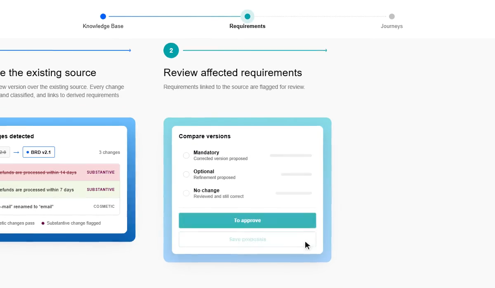
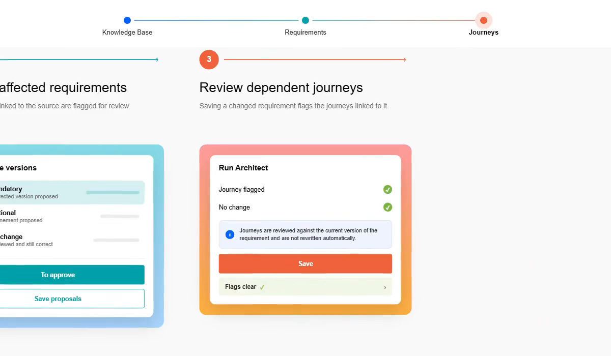

Touchstone — 機能・導線・画面
確認日：2026年10月27日。全体比較・画面／動画ギャラリー
調査範囲
要求の出典・人の承認・ジャーニー・実行証跡をつなぐ企業向けWeb検証。
収録した変更管理動画は公式の概念アニメーション。ログイン後の実UI・承認操作・監査出力・権限設定は未操作。
作業の流れ
Knowledge Base → Analystで要求 → 人が承認 → ArchitectでJourney → 承認 → Autopilotでテスト → 決定的実行 → 失敗診断／修復提案 → 承認・再実行
機能の構成
Knowledge Base / Requirements / Journeys、Analyst / Architect / Autopilot、Release Evidence。ツアーは業務メールのゲートまで。
下表は公開説明・文書の要約。実操作した範囲は画面一覧と調査範囲に限定し、表全体を実機検証済みとはしない。
| 段階 | 画面・機能 | 入力・操作と次の行動 |
|---|---|---|
| 入力 | Knowledge Base | 文書・仕様・チケット等を根拠として要求に結び付ける。 |
| 要求 | Analyst・Requirements | 根拠付き要求を提案し、人がレビューして承認する。 |
| 設計 | Architect・Journeys | 要求からユーザージャーニーを作り、要求との依存を保つ。 |
| 実装・実行 | Autopilot・deterministic run | 承認済みの内容を実行可能なテストにし、実行を記録する。 |
| 変更 | Source replacement・version comparison | 資料差替えで変更を検出し、影響要求と依存ジャーニーを再レビューする。 |
| 保守 | Diagnosis・repair proposal | 失敗診断と修復案を、承認・再実行の循環につなぐ。 |
| 共有・判断 | Release Evidence | 要求・版・実行・承認者を結び付け、リリース判断の根拠を扱う。 |
人の担当と比較上の着眼点
要求・Journey・変更・修復の決定を行う。承認を省略する自律操作の製品とは開始負担が異なる。
調査者の解釈：単発の要求→テストだけでなく、資料の改版→影響要求→依存フローという保守の連鎖を比較する必要がある。 製品性能の優劣を実証した結論ではない。
動画と見る場面
- 資料差替え→要求レビュー→依存ジャーニー（公式の概念アニメーション）（27.0秒、official-concept-video）。公式の掲載元。
見る場面： 4秒：資料の差替え、
4秒：資料の差替え、
13秒：影響要求のレビュー、
21秒：依存Journeyのレビュー。


画面一覧
製品内の画面は未収録。公開説明に基づく機能表と、実際のUIを確認できた範囲を分けている。